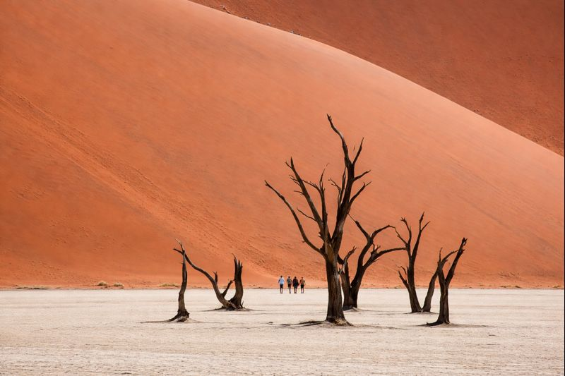

Namib-Naukluft
150k
Sossusvlei & Deadvlei
Dunes rouges géantes et arbres pétrifiés millénaires

RetourLe silence du désert et l'éclat des dunes rouges
La Namibie est une terre de superlatifs. Abritant le Namib, considéré comme le plus vieux désert du monde, elle offre des paysages d'une beauté irréelle où les dunes de sable rouge plongent directement dans les eaux glacées de l'Atlantique. Entre le parc national d'Etosha, l'un des plus grands sanctuaires de faune d'Afrique, et les mystères de la Skeleton Coast, la Namibie est la destination ultime pour les amoureux de grands espaces et de solitude majestueuse. Un pays où les cultures ancestrales Himbas rencontrent un héritage colonial singulier dans un cadre de nature brute.
Explorez les 15 merveilles absolues de la Namibie
Dunes rouges géantes et arbres pétrifiés millénaires

Le "Grand Lieu Blanc", paradis de la faune sauvage africaine

Ville côtière au charme allemand entre désert et océan

"La terre que Dieu a créée dans un jour de colère"

Le deuxième plus grand canyon au monde, vertigineux et sauvage

Plus de 2 500 gravures rupestres datant de 6 000 ans

Montagnes de basalte et éléphants du désert insaisissables

Rencontre avec le peuple ocre dans l'une des régions les plus reculées

La ville fantôme ensablée, vestige de l'époque des diamants

Le "Cervin de Namibie", dômes de granit spectaculaires et arches

Une oasis tropicale luxuriante irriguée par les fleuves Okavango et Zambèze

Lagune peuplée de milliers de flamants roses et otaries de Cape Cross
Capitale moderne mêlant influences européennes et culture africaine
Le plus haut sommet de Namibie et ses peintures rupestres sacrées
Forteresse de grès rouge abritant des espèces rares (rhinocéros blancs)
Un héritage pluriel gravé dans la pierre et le sable.
La culture namibienne est une mosaïque fascinante où cohabitent traditions millénaires et modernité. Les Himbas du Kaokoland et les Héréros perpétuent des modes de vie ancestraux et des codes vestimentaires uniques. L'influence coloniale allemande est encore visible dans l'architecture de Swakopmund et Luderitz, créant un contraste saisissant au cœur de l'Afrique. La Namibie est aussi le berceau de l'art rupestre Bushmen, témoignant de la connexion spirituelle profonde de l'homme avec cette terre aride depuis des millénaires.
Éleveurs nomades célèbres pour leur peau enduite d'otjize (ocre et graisse) et leurs parures complexes.
Une influence unique visible dans la gastronomie (pâtisseries, bières) et l'architecture "Fachwerk".
Les peintures rupestres de Twyfelfontein et du Brandberg racontent l'histoire de la chasse et des mythes San.
L'histoire fascinante de la "Sperrgebiet" qui a forgé le destin économique et historique du sud.

L'excellence namibienne. Des parures Himbas aux cosmétiques précieux à l'huile de Marula.
 Culture
Culture
Colliers et bracelets artisanaux authentiques, réalisés selon les techniques ancestrales du Kaokoland.
 Soin
Soin
L'élixir de beauté namibien. Huile pressée à froid, ultra-nourrissante et antioxydante pour la peau.
 Mode
Mode
Tissage luxueux issu des élevages du sud, réputé pour sa douceur et sa robustesse incomparable.
Sel pur récolté dans les marais salants de la côte atlantique, séché au soleil et au vent du désert.
Objets décoratifs sculptés à la main dans du bois local, représentant la faune du Zambèze.
Vannerie traditionnelle robuste aux teintes naturelles, héritage des femmes du nord.

Sossusvlei, Design Désertique

Bordure du Parc d'Etosha

Swakopmund, Face à l'Océan

Skeleton Coast, insolite

Bord du Canyon, vue vertigineuse

Windhoek, Luxe en Savane
La cuisine namibienne est un mélange robuste d'influences germaniques, de traditions locales et de produits d'exception.
Viande de gibier maigre et savoureuse, spécialité des Braais namibiens.
Viande séchée aux épices (bœuf ou gibier), le snack national par excellence.
Parmi les meilleures au monde, grâce aux eaux froides et riches de l'Atlantique.
Ragoût traditionnel mijoté lentement dans une marmite en fonte sur les braises.
L'héritage allemand : strudel aux pommes croustillant, souvent servi à Swakopmund.
Viande de bœuf grillée au feu de bois dans les marchés de Windhoek, servie avec du piment.
Bouillie consistante à base de mil (Mahangu), base de l'alimentation au nord.
Icone culinaire de Swakopmund, dégusté sur la jetée face à l'océan.
Délice traditionnel riche en protéines, consommé frit ou en ragoût.
Brassée selon la "Reinheitsgebot" (loi de pureté allemande), fierté nationale.
Fruit endémique du désert, dont les graines sont utilisées comme snack ou en huile.
Saucisse épicée traditionnelle, indispensable pour tout pique-nique ou safari.
Vivez l'ambiance festive de la Namibie à travers ses carnavals et ses fêtes traditionnelles.
La plus grande fête de la bière d'Afrique (Octobre), célébrée avec passion dans la capitale.
Défilés colorés, bals masqués et humour satyrique hérités de la tradition rhénane (Avril).
Grand rassemblement Herero à Okahandja (Août) pour honorer les chefs ancestraux.
La période idéale pour le safari à Etosha (les animaux se regroupent aux points d'eau). Les journées sont ensoleillées et les nuits fraîches. Visibilité parfaite au Fish River Canyon.
Le désert fleurit miraculeusement. C'est la période de naissance des antilopes. Les photographes adorent les contrastes de lumière après les orages soudains.
Conduite à gauche. Les routes de gravier exigent une grande prudence (4x4 recommandé). Toujours faire le plein dès que possible.
La Namibie est un pays aride. Économisez l'eau. L'eau du robinet est potable dans les villes mais préférez l'eau embouteillée en safari.
La Namibie est l'un des pays les plus sûrs d'Afrique. Vigilance normale requise dans les centres urbains comme Windhoek.
L'indice UV est extrêmement élevé. Crème solaire haute protection, chapeau et lunettes sont obligatoires toute l'année.
Expert Safari (Etosha)
Avec 20 ans d'expérience à Etosha, Johannes possède un don pour débusquer les lions et les rhinocéros noirs les plus secrets.
Guide Culturelle & Kaokoland
Native du Kaokoland, Ua facilite des rencontres éthiques et profondes avec le peuple Himba et partage sa culture passionnante.
Spécialiste Géologie & Désert
Passionné par la formation des dunes de Sossusvlei et les paysages de la Skeleton Coast, Dieter rend le désert vivant.